Psychose Podcast
Folge 00: Der Sinus einer Summe
Ihr Browser unterstützt die Audio wiedergabe nicht.
Informationen
Download
Lizenz
Folge 01: Wirre Politik & Meinung
Ihr Browser unterstützt die Audio wiedergabe nicht.
Informationen
Download
Lizenz
(sehr) coole Bilder
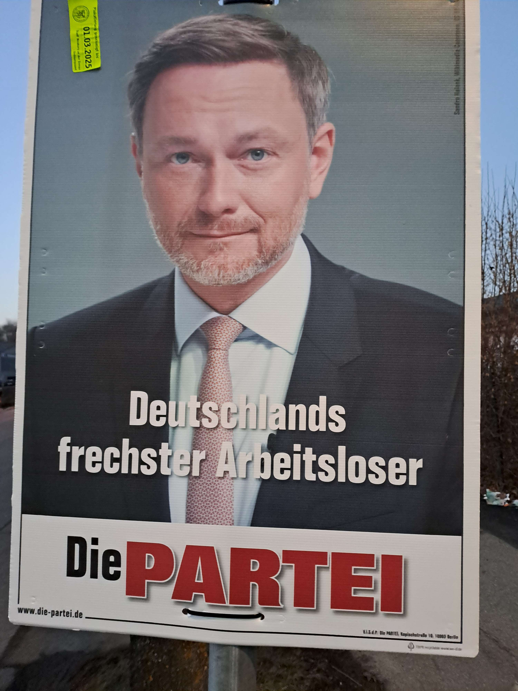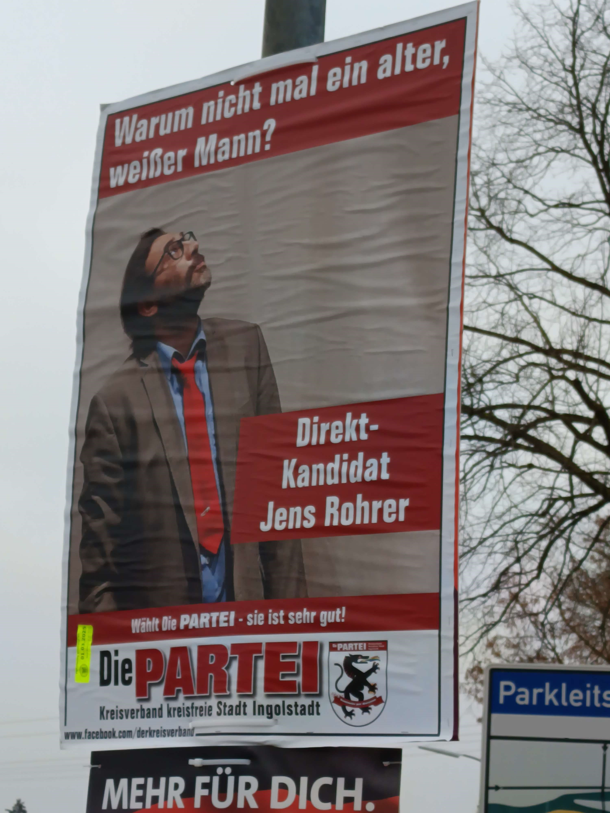 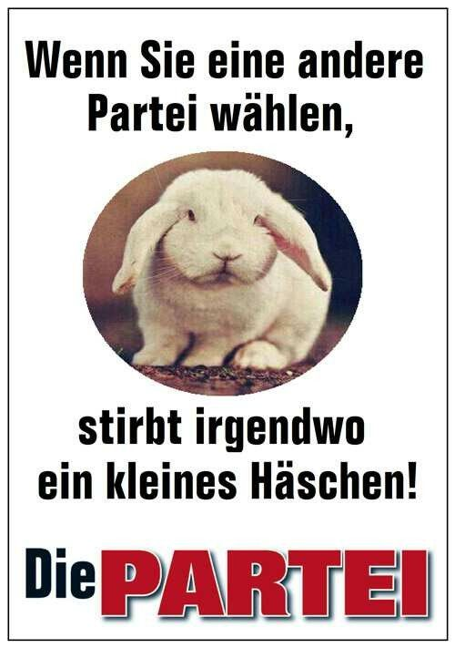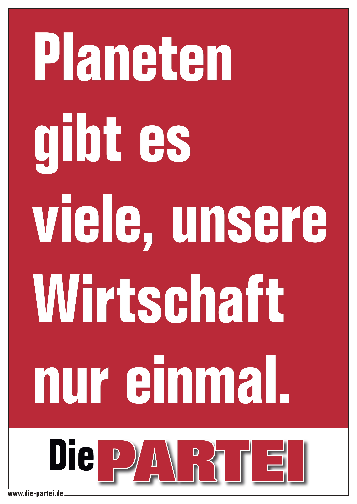
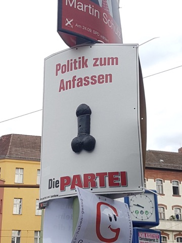 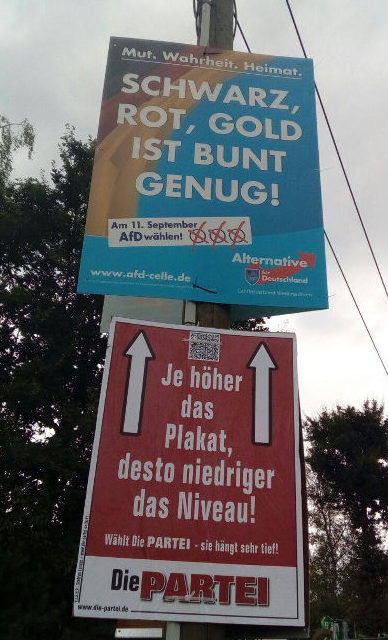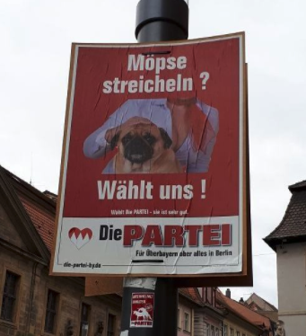 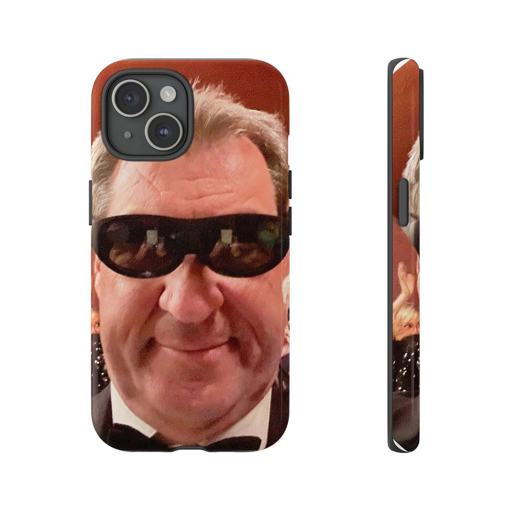
 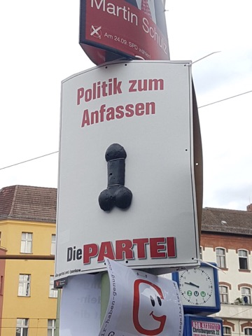
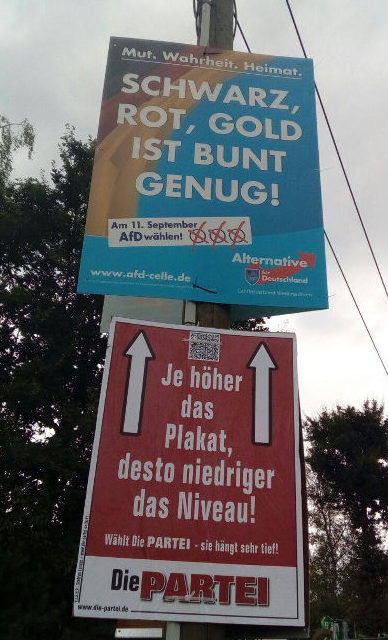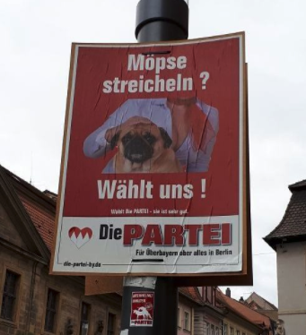
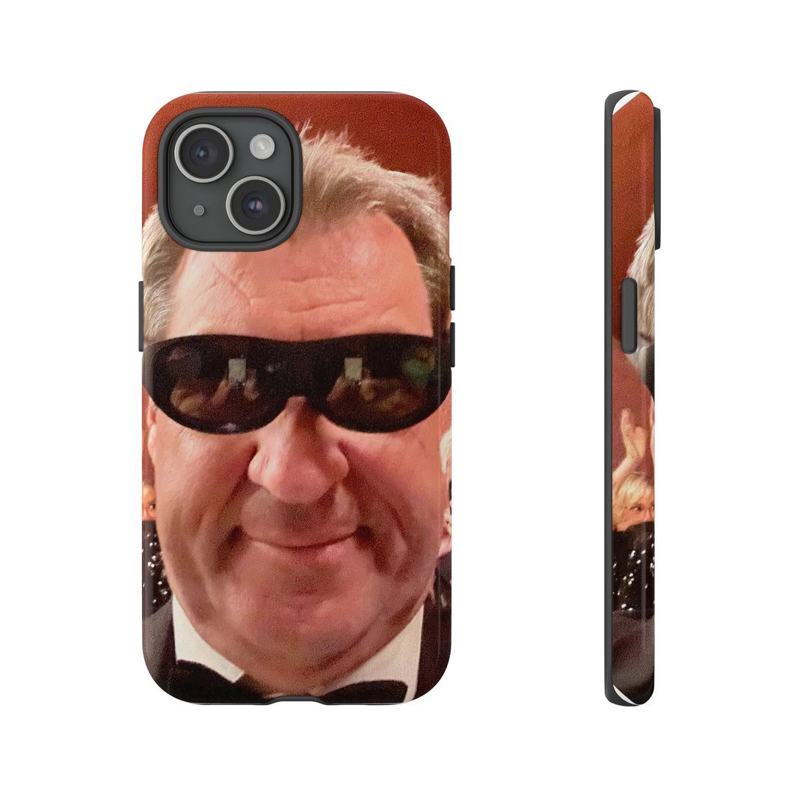
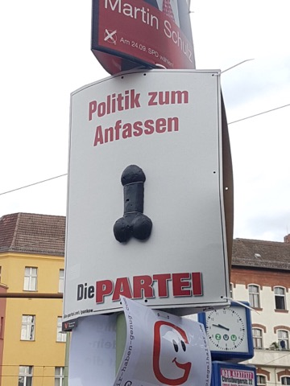
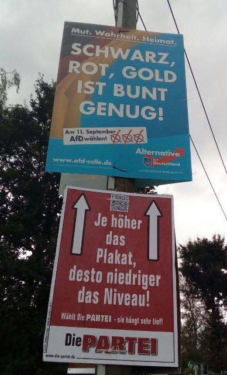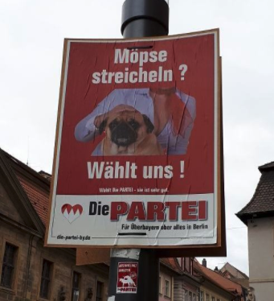
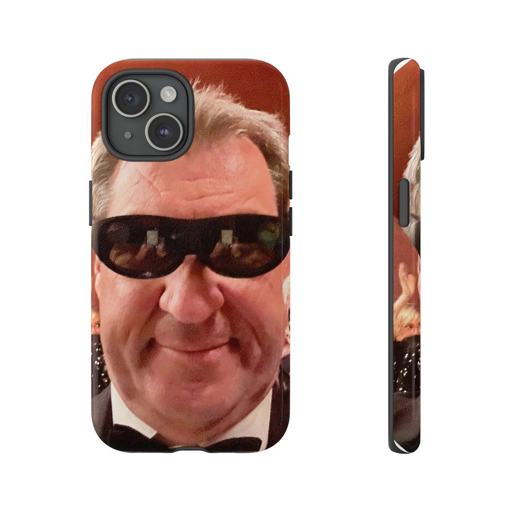